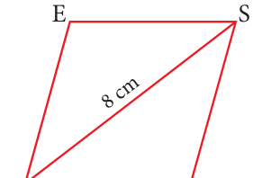
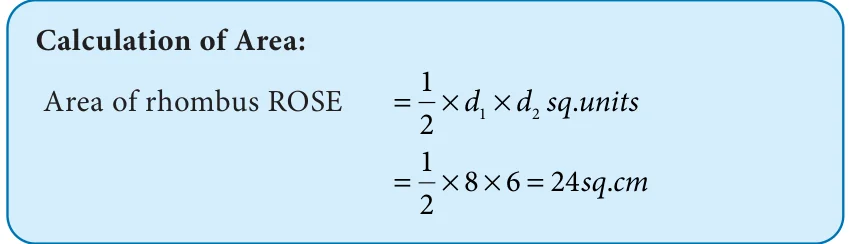
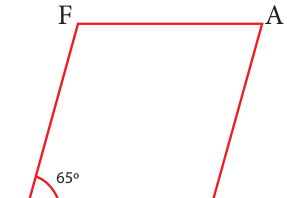
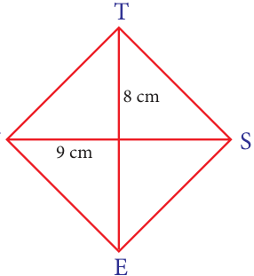
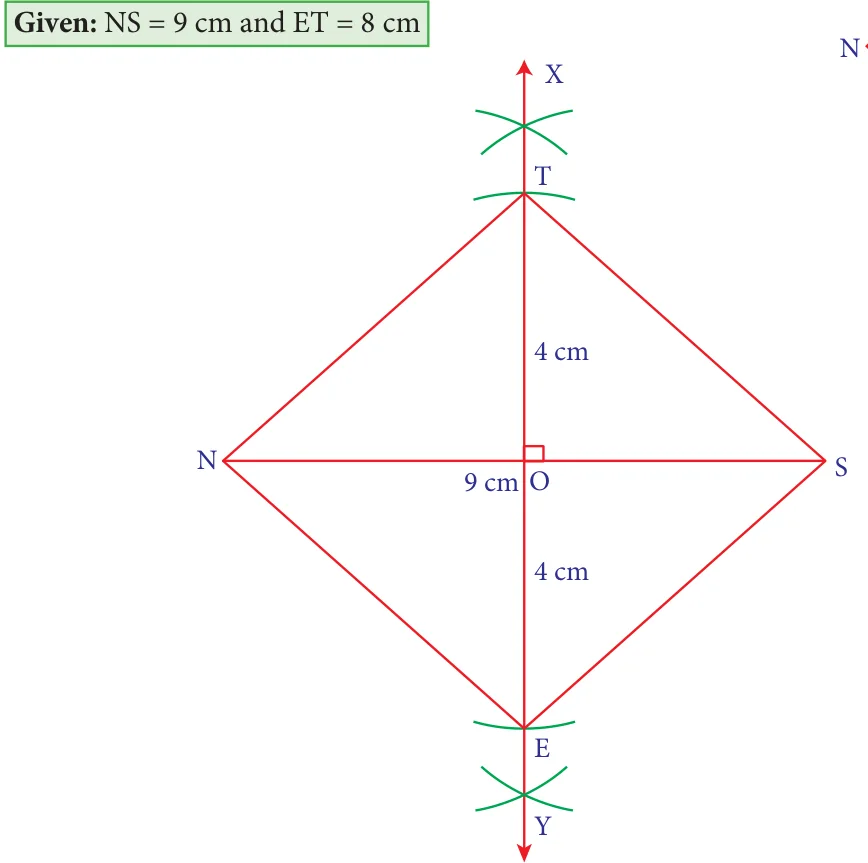
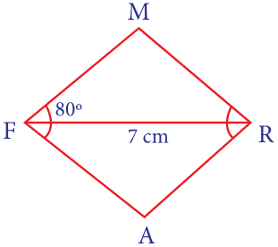
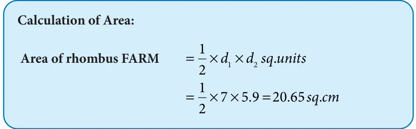

Let us now construct a rhombus with the given measurements
- One side and one diagonal
- One side and one angle
- Two diagonals
- One diagonal and one angle
5.14.1 Construction of a rhombus when one side and one diagonal are given
Example 5.34

Construct a rhombus ROSE with \(RO = 5\) cm and \(RS = 8\) cm. Also find its area.
Solution:
Given: \(RO = 5\) cm and \(RS = 8\) cm

Steps:
- Draw a line segment \(RO = 5\) cm.
- With R and O as centres, draw arcs of radii 8 cm and 5 cm respectively and let them cut at S.
- Join RS and OS.
- With R and S as centres, draw arcs of radius 5 cm each and let them cut at E.
- Join RE and SE.
- ROSE is the required rhombus.

5.14.2 Construction of a rhombus when one side and one angle are given
Example 5.35

Construct a rhombus LEAF with \(LE = 6\) cm and \(\angle L = 65^{\circ}\) . Also find its area.
Solution:

Steps:
- Draw a line segment \(LE = 6\) cm.
- At L on LE, make \(\angle ELX = 65^{\circ}\) .
- With L as centre draw an arc of radius 6 cm. Let it cut LX at F.
- With E and F as centres, draw arcs of radius 6 cm each and let them cut at A.
- Join EA and AF.
- LEAF is the required rhombus.

5.14.3 Construction of a rhombus when two diagonals are given
Example 5.36
Construct a rhombus NEST with \(NS = 9\) cm and \(ET = 8\) cm. Also find its area.

Solution:

Steps:
- Draw a line segment \(NS = 9\) cm.
- Draw the perpendicular bisector XY to NS. Let it cut NS at O.
- With O as centre, draw arcs of radius 4 cm on either side of O which cut OX at T and OY at E.
- Join NE, ES, ST and TN.
- NEST is the required rhombus.

5.14.4 Construction of a rhombus when one diagonal and one angle are given
Example 5.37

Construct a rhombus FARM with \(FR = 7\) cm and \(\angle F = 80^{\circ}\) . Also find its area.
Solution:

Steps:
- Draw a line segment \(FR = 7\) cm.
- At F, make \(\angle RFX = \angle RFY = 40^{\circ}\) on either side of FR.
- At R, make \(\angle FRP = \angle FRQ = 40^{\circ}\) on either side of FR.
- Let FX and RP cut at M and FY and RQ cut at A.
- FARM is the required rhombus.
